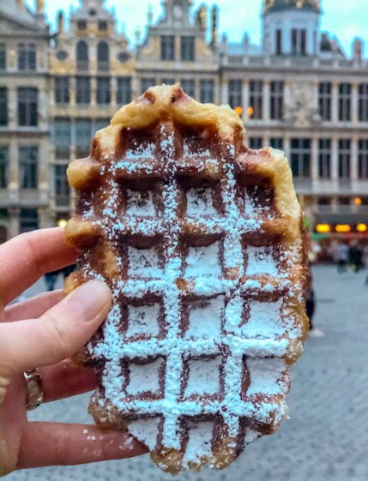
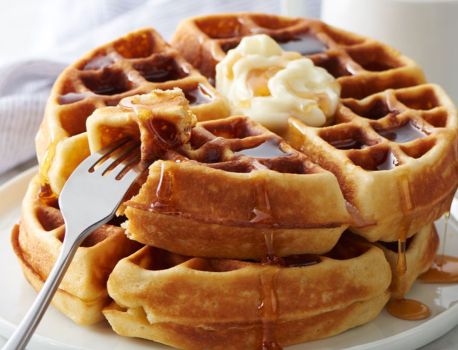
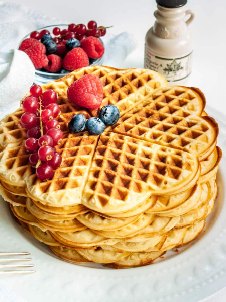
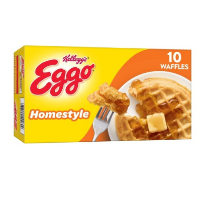
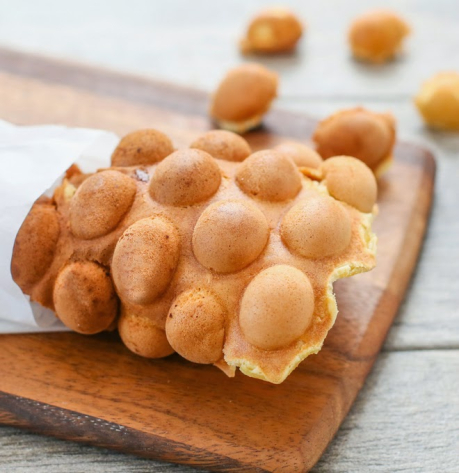
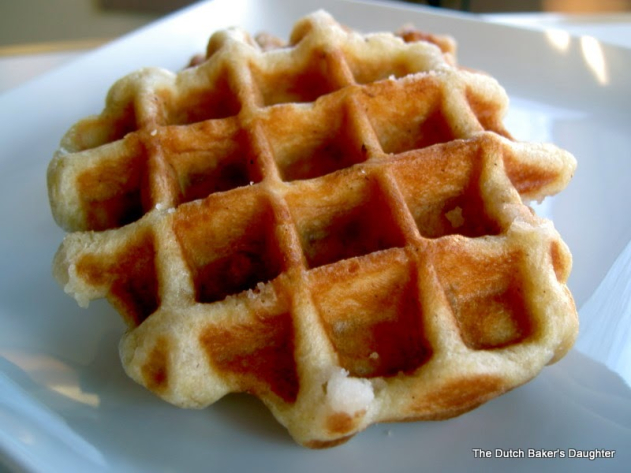

Brussels waffles are big rectangular waffles that are crispy on the outside and fluffy on the inside with large deep pockets.
Belgium waffles are usually circular and served as often for breakfast as they are for dessert.
American waffles come in all shapes and sizes and are served for lunch or dinner as often as breakfast in some areas as dishes like chicken and waffles are very popular.
Toaster waffles are frozen waffles that can be taken straight from the freezer, tossed in the toaster and then eaten for breakfast.
Hong Kong egg waffles are frequently called bubble waffles.
Liege waffles are similar to Brussels or Belgium waffles, but are smaller with a denser texture and a caramelized sugar coating on the outside that keeps the waffle from getting soggy if topped with fruit or cream.
When mentioning waffles it is necessary to show everyone this song.